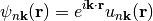
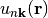
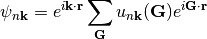
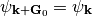
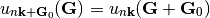

with  periodic with respect to lattice translations.

Bloch functions differing by a reciprocal lattice vector are, by definition, equal.

This gives a relation among the coefficients of the plane waves.
